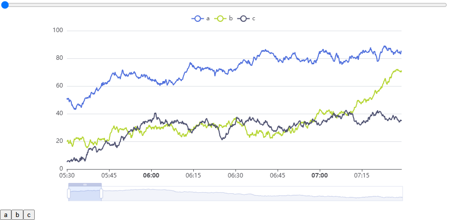

The chart was fine as long as you looked at a short time range. Pick a bigger window on the slider and the API sent back a lot more data, around 2.4 MB of JSON for a large window, and the whole page started to stutter. My first instinct was that my own code was too slow, so I optimized it. That helped a little. The real problem turned out to be that I had handed Vue that 2.4 MB object and asked it to watch every property. This is what happened, why, and the small change that fixed it.
The setup
This was a dashboard at work, so I can't show the real code. What follows is a trimmed version with the same structure and generic names. It was a Vue component written with the Options API: a parent that loads the data for the selected time window, and a child that draws the chart. There were two sliders. A range slider in the UI picked the time window, and each change fetched the rows for that window from the API. ECharts' own dataZoom slider sat along the bottom of the chart for zooming inside the data that was already loaded. The child also rendered a ChartLegend component that needed the chart instance so it could toggle series.

Here is the child as I first wrote it, trimmed to the parts that matter:
// TrendChart.vue (before)
export default {
components: { ChartLegend },
props: { chartData: { type: Array, required: true } },
data() {
return {
chart: null, // ECharts instance
options: { // full chart option
dataset: { source: this.chartData },
xAxis: { type: 'time' },
yAxis: { type: 'value' },
series: [ /* line series using encode: { x: 0, y: n } */ ],
dataZoom: [{ type: 'slider' }, { type: 'inside' }]
}
};
},
watch: {
chartData(rows) { // a new time window arrived
this.options.dataset.source = rows;
this.chart.setOption(this.options);
}
},
mounted() {
this.chart = echarts.init(this.$refs.chart);
this.chart.setOption(this.options);
}
};
// template: <ChartLegend :chart-instance="chart" />And the parent, which loads a new window every time the range slider changes:
// Parent (before)
data() {
return { chartData: [] };
},
methods: {
async onWindowChange(range) {
this.chartData = await loadSeries(range); // up to ~2.4 MB of rows
}
}This looks like idiomatic Vue. Everything the component uses is declared in data(), which is exactly what the docs tell you to do for state. That turned out to be the problem.
What I tried first: optimizing my own code
Because the lag only showed up with big windows, I assumed my data handling was the slow part, and I refactored it. I cut down the loops and the filter passes the component made over the rows before they reached the chart. It was a reasonable thing to do, and it did help a bit. But the lag on large windows was still there, and it still grew with the size of the window.
In hindsight, that was the clue. I had removed work from my code, but the cost that scaled with the data wasn't in my code. It was in what Vue was doing every time anything read those rows.
If you are about to chart a payload this size, look at its shape first. Paste a sample into the JSON Viewer to see how deep the rows go, or into the JSON Formatter to read it. How many objects and arrays are nested inside each row is exactly what decides how much work Vue's reactivity will do, as the next section shows.
What "reactive" actually means in Vue 3
I knew Vue was "reactive", but I had never thought about what that costs. Here is the model that made the bug obvious once I had it.
When data() returns an object, Vue does not keep that object as it is. It wraps it in a JavaScript Proxy. A Proxy is a stand-in object that lets Vue run its own code on every operation:
- get trap: every time something reads a property, Vue calls
track()to record "the currently running effect depends on this property". That is how Vue knows which component to re-render later. - set trap: every time something writes a property, Vue calls
trigger()to re-run everything that depended on it.
Reactivity is also deep. Nested objects are not converted up front. They are wrapped in their own reactive() proxy the moment they are accessed. So this.options.dataset.source[5000][1] means: a proxied options, returning a proxied dataset, returning a proxied source array, returning a proxied row, and finally a number, with a get trap and a track() call at every step.
For a form with ten fields, that cost is invisible. Now think about what ECharts does in setOption: it walks the dataset, reading every row and every value, to build its internal storage. With my data sitting inside data(), every one of those reads went through the Proxy machinery. The bigger the window, the more rows, and the more trap calls:
The chart instance had the same problem in a different form. this.chart = echarts.init(...) stores the instance in reactive state, and when you read it back through this.chart you get a Proxy of ECharts' whole internal object graph. Calling this.chart.setOption() runs ECharts' own code with this bound to that Proxy. The Vue docs are direct about this: in the markRaw section they list "a complex 3rd party class instance" as something that simply should not be made reactive.
Seeing it in a profile
I can't publish profiles from the real dashboard, so to write this post with honest numbers I rebuilt the problem as a small standalone page (shown in the screenshot above). It uses Vue 3.5 with the Options API, ECharts 6.1, and a generated dataset of about 73,000 rows ([timestamp, a, b, c], three line series), which is 2.4 MB as JSON. It has the same parent/child split, the same ChartLegend prop and the same dataset.source wiring. A CPU profile of ten updates in the "before" version shows where the time goes:
- About 1.7 seconds of self time inside Vue itself, and 1.25 seconds of that in one function: the reactive
gettrap.createReactiveObject(wrapping rows as they are accessed) andtrackshow up right behind it. - ECharts' own time was 3.4 times higher than in the fixed version (4.9 s vs 1.4 s), because every property it read was a Proxy read instead of a plain one.
- Garbage collection time roughly doubled, from all the short-lived proxy bookkeeping.
None of that time is in the component's own loops or filters, which is why refactoring them couldn't fix it. The profile used Vue's development build so the function names are readable, which makes the absolute times higher. The proportions are what matter. The timings in the results section come from the production build.
The fix I shipped
The fix was to take the data out of Vue's reactivity. I made four changes in total, and each one is there for a reason.
1. markRaw the data where it enters Vue
import { markRaw } from 'vue';
// Parent (after)
data() {
return { chartData: [] };
},
methods: {
async onWindowChange(range) {
this.chartData = markRaw(await loadSeries(range));
}
}markRaw() marks the object so Vue will never convert it into a Proxy, even when it sits inside reactive state. chartData is still a reactive property: assigning a new window's array still triggers the child's watcher. But the array itself, and every row in it, stays a plain JavaScript object, so ECharts reads it at full speed.
This is the change that matters most. The data goes through one component on its way to the chart, and marking it once, at the point where it enters Vue, keeps it raw everywhere downstream. It is also worth checking how big a large window's payload really is. Running a sample response through the JSON Minifier shows its minified size, and often shows fields the chart never uses that could stay on the server.
2. Move the options out of data()
import { toRaw } from 'vue';
// TrendChart.vue (after)
data() {
return { chart: null }; // options no longer declared here
},
created() {
// plain field on the instance: not reactive, never proxied
this.options = {
dataset: { source: toRaw(this.chartData) },
xAxis: { type: 'time' },
yAxis: { type: 'value' },
series: [ /* ... */ ],
dataZoom: [{ type: 'slider' }, { type: 'inside' }]
};
},
watch: {
chartData(rows) {
this.options.dataset.source = toRaw(rows);
this.chart.setOption(this.options);
}
}The option object is only ever handed to setOption. Nothing in the template renders it, so there is nothing for Vue to track. A property assigned to this in created() without being declared in data() is just a normal property on the instance. Vue does not proxy it.
I did not markRaw the options as well. Once they are out of data(), Vue never sees them, so there is nothing left to opt out of.
3. Keep the chart instance in data(), but markRaw it
mounted() {
this.chart = markRaw(echarts.init(this.$refs.chart));
this.chart.setOption(this.options);
}
// template (unchanged):
// <ChartLegend :chart-instance="chart" />This one is different from the options on purpose. The template passes the instance to ChartLegend through :chart-instance, so it needs to be something the template can reach, and Vue has to notice when it goes from null to a real chart after mount. Declaring chart in data() gives me that. Wrapping the value in markRaw means that when Vue stores it, it stores the real ECharts instance and not a Proxy of it. The property is reactive, but the object inside it is not.
4. toRaw in the child as a safety net
The toRaw(...) calls in step 2 are deliberate belt-and-braces. The parent already passes raw data, so today they do nothing. But the child cannot know that. If someone later reuses TrendChart from a parent that forgets markRaw, the prop arrives as a reactive Proxy and the lag comes back quietly.
toRaw() returns the original object behind a Vue proxy, or the object itself if it was never proxied. It is cheap, it does not copy anything, and it does not mark the object. It is a one-off unwrap, which is why it belongs at the boundary where data leaves Vue and goes into a library. The docs call it "an escape hatch" for reading "without incurring proxy access / tracking overhead", which is exactly this situation.
Note what I did not do: deep-copy the data. JSON.parse(JSON.stringify(data)) or structuredClone would also give ECharts a plain object, but they allocate a second copy of a multi-megabyte structure on every window change. toRaw just hands over the object that already exists. (If you need a real copy for other reasons, the trade-offs between copying approaches are covered in JSON circular references and structuredClone.)
The results
These numbers come from the reproduction, not from the real dashboard. The environment was Chrome 153 on Windows 11 (8 logical cores), with Vue 3.5.43 (production build) and ECharts 6.1.0. Each time is measured from the moment the new data (or new slider value) reaches Vue until the next frame is painted, which includes ECharts' setOption. The API response is parsed before the timer starts, so network and JSON.parse time are not counted.
First, how the time to show a new window grows with the window's size. Each point is the median of three runs of seven loads:
This matches what I saw at work: small windows felt fine, and the lag grew with the window. Before the fix, the cost climbs steeply with every extra row. After the fix it still grows, because ECharts has real work to do with more data, but at the largest window it is about 2.6 times lower.
Then the full 2.4 MB window, split by which change does the work (median of three runs):
| Version | New 2.4 MB window arrives | Range slider moved |
|---|---|---|
Before (everything in data()) | 408 ms | 360 ms |
Only step 1 (markRaw in the parent) | 117 ms | 117 ms |
| Full fix (steps 1–4) | 131 ms | 100 ms |
Two things stand out. First, the update got about three times faster with nothing about the chart changed: same data, same options, same ECharts version. Second, markRaw in the parent does almost all of the work on its own. The other three changes barely move the number in this test, and the small differences between the last two rows are within run-to-run noise. (This run was also a little faster overall than the single-window run behind the chart above, which is why the 2.4 MB "before" figures differ slightly.) I still keep the other changes, because they make the component safe on its own (the toRaw safety net) and stop Vue from proxying objects it never needs to watch (the options and the ECharts instance).
The 100–130 ms that remains is ECharts doing real work with 73,000 rows. Sending less data for large windows, or aggregating on the server, are the next levers. For me the reactivity fix was enough.
One more observation from the reproduction: dragging ECharts' built-in dataZoom slider was smooth in both versions (a steady 17 ms per frame, no long tasks). That drag only zooms inside data ECharts has already loaded, and it doesn't go back through the Vue component, so the proxies never come into it. The expensive path is the one where new data goes through Vue and into setOption, which is exactly what a large time window triggers.
To try this on your own machine, you need a dataset big enough to hurt. The Mock Data Generator can produce thousands of realistic rows as JSON in one go, which is much quicker than hand-writing a loop.
Trade-offs to know about
- A markRaw object does not update the UI when you mutate it.
this.chartData.push(row)changes the array, but nothing re-renders. To change the data, replace the whole reference:this.chartData = markRaw(newRows). The property is still reactive, so the assignment triggers the update. For data that arrives as a whole new response per time window, this is what you want anyway. - Don't mix the raw and proxied versions of the same object. The Vue docs call this an identity hazard: a raw object and its proxy are not
===. If youmarkRawa parent object but put one of its nested objects into reactive state separately, that nested object gets proxied. toRawis for reading, not for keeping. The docs recommend against holding a persistent reference to the raw object of something that is reactive, because writes through it bypass Vue and the UI will not update.- This is a large-data fix, not a general rule. For normal component state, Vue's deep reactivity is the reason Vue is pleasant to use. Vue's own performance guide says the overhead "typically becomes noticeable when dealing with large arrays of deeply nested objects".
My checklist for large datasets in Vue charts
- Profile before you optimize your own loops. If the Performance panel shows Vue's
gettrap ortracknear the top, the fix is in how you store the data, not in your code or the chart options. I lost time learning this. - Mark data raw where it enters Vue.
markRawin the component or store that receives the API response, once. - Keep library instances non-reactive. If the template needs the instance (like my
ChartLegend), declare the property indata()but storemarkRaw(instance). If it doesn't, don't put it indata()at all. - Keep chart options out of
data(). They are input for a library, not UI state. A plain field set increated()is enough. - Unwrap at the library boundary.
toRaw()on anything you pass into ECharts, as a safety net.
If you're on the Composition API, the same idea applies: shallowRef tracks only .value and leaves the contents alone, and markRaw / toRaw work the same way. The data-loading side is also a good place to add types. Paste one row of the response into JSON to TypeScript and you get an interface for the row shape, which fits naturally now that the rows are plain objects.
Frequently Asked Questions
Why is my Vue ECharts chart slow with large data?
A common cause is that the dataset, the chart option object or the ECharts instance is inside Vue's reactive state (data() in the Options API, or ref/reactive in the Composition API). Vue wraps it in Proxies, so every time ECharts reads the data during setOption, each property read goes through a Proxy get trap and dependency tracking. With tens of thousands of rows that overhead can be larger than the chart rendering itself.
What does markRaw do in Vue 3?
markRaw marks an object so Vue never converts it into a reactive Proxy, even when it is placed inside reactive state. Reads are plain JavaScript property reads with no tracking. The trade-off is that mutating a markRaw object does not update the UI; to change it, replace the reference.
What is the difference between markRaw and toRaw?
markRaw is applied to a plain object before it enters reactive state and stops Vue from ever proxying it. toRaw takes an existing Vue proxy and returns the original object behind it, so you can read it without proxy overhead. markRaw changes how Vue treats the object from then on; toRaw is a one-off unwrap.
Should I put the ECharts instance in data()?
Only if the template needs it, and then wrap it with markRaw so Vue stores it as-is. The Vue docs list complex third-party class instances as values that should not be made reactive. If the template does not need the instance, keep it off the reactive state entirely.
References
- How Reactivity Works in Vue (Vue docs, Reactivity in Depth)
- Deep Reactivity (Vue docs, Reactivity Fundamentals)
- markRaw(), toRaw() and shallowRef() (Vue docs, Reactivity API: Advanced)
- data (Vue docs, Options: State)
- Reduce Reactivity Overhead for Large Immutable Structures (Vue docs, Performance)
- Proxy (MDN)
- dataset.source and dataZoom-slider (Apache ECharts option reference)
- Dataset (Apache ECharts handbook)